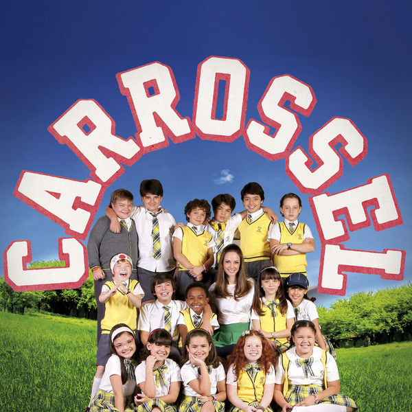
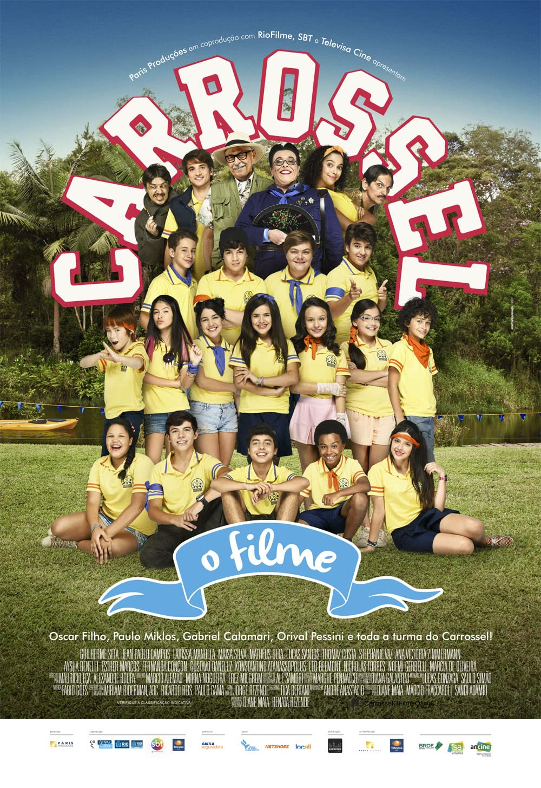

Carrossel
A base da história da novela Carrossel é a convivência, descobertas e problemas enfrentados pelos alunos da 2ª serie da Escola Mundial, local que serve de cenário principal da trama, onde eles tentam resolver todas suas questões da melhor maneira possível e contando com a ajuda da professora Helena, que acaba sendo uma verdadeira mãe para todos eles.
O filme
O filme
Carrossel: O Filme é um filme brasileiro que estreou em 23 de julho de 2015, baseado na telenovela homônima, que por sua vez foi baseada na telenovela mexicana Carrusel, de 1989. Jean Paulo Campos, Larissa Manoela, Maisa Silva interpretam os personagens centrais. A realização do longa-metragem é uma parceria do SBT Filmes, Televisa Cine, Paris Filmes, Downtown Filmes e RioFilme.
 >